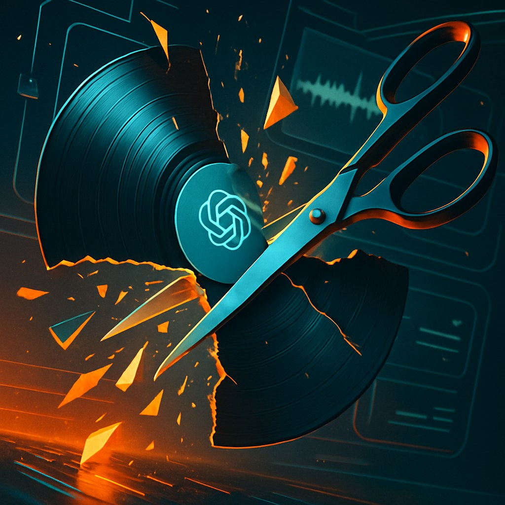
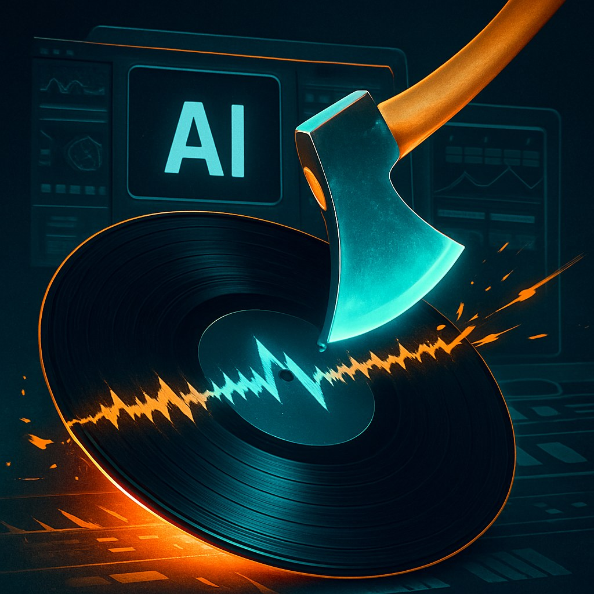

In 1991, a federal judge looked at Biz Markie's unlicensed Gilbert O'Sullivan sample and quoted the Bible before ruling against him. "Thou shalt not steal." The Grand Upright decision reshaped hip-hop overnight. Suddenly even a two-second drum hit needed clearance, and the clearance process turned into a toll booth operated by the people who already had money. The law was blunt, expensive, and tilted toward incumbents. But at least it had a logic: you took something, you pay for it.
That logic is now facing something it was never built to handle. When the major labels sued Suno and Udio in June 2024, Universal's complaint eventually expanded to allege 61,026 additional recordings had been used in training, putting theoretical statutory damages above $9 billion. The number is almost comically large. It's also almost beside the point. The question isn't whether training on copyrighted recordings without permission is wrong. It probably is. The question is whether the sampling-era legal framework, designed to handle one artist borrowing from one other artist, can do anything meaningful about a model ingesting tens of millions of complete works in one pass.
Settle, Move On, Repeat
Warner and Universal eventually settled with Suno and Udio in late 2025. The terms weren't fully public, but what came after them was revealing. Independent artists got nothing. A separate class action alleges roughly 60% of the 40 million tracks in Suno's training data came from independents, who don't have a Universal-sized legal department to force a negotiation. The majors extracted a deal that probably helps the majors. The rest of the ecosystem watched from outside the room.

Meanwhile, Suno raised $400 million in June 2026 at a $5.4 billion valuation. Twelve months earlier the company was worth $500 million. Active litigation from three major labels apparently wasn't much of a deterrent to the people writing the checks. The business model isn't just surviving the lawsuits. It's being rewarded through them, because a settlement with Universal is arguably better PR than no lawsuit at all. It signals you're real enough to be worth suing.
The Framework Problem
The sampling precedents were always a blunt instrument. They priced small independent artists out of a technique that major-label acts could afford to clear. They made some musicians rich and shut others out entirely based on who could afford a music attorney in 1994. The AI training problem is different in scale but familiar in shape: the people with resources to negotiate get a deal, the people without resources get nothing, and the underlying legal framework remains too slow and too expensive to help anyone in the middle.
The fair use question will eventually be settled by courts or Congress, and there are real arguments on both sides. Training a model isn't the same as releasing a sample. The output isn't a direct copy of any input. These distinctions matter legally. But "legally distinct" and "economically fair" are different standards, and the industry already knows what happens when you build a system that satisfies the first while ignoring the second. It spent thirty years living with it.
Whatever comes next, the lesson from sampling law is pretty clear: frameworks that let the biggest players cut private deals while leaving everyone else uncompensated don't fix the underlying problem. They just make it easier to live with.
